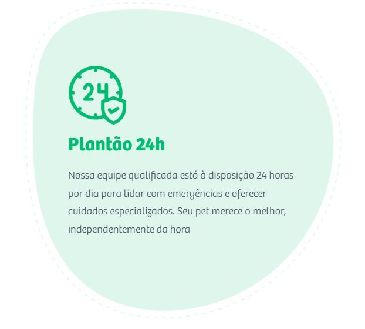
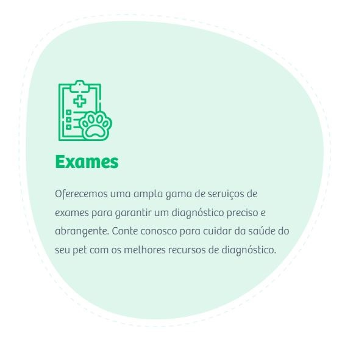
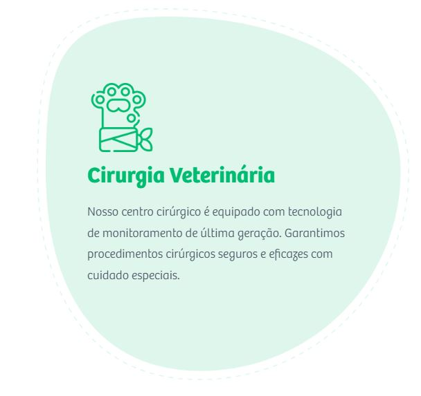
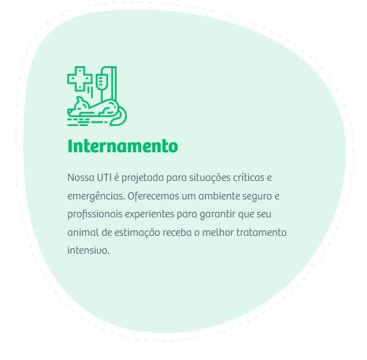

ClínicaVetmed
Desde 2004 a VETMED Clínica Veterinária está no mercado com serviços de atendimento clínico veterinário, cardiologia,
atendimento cirúrgico e Pet shop. Em 2008 após a ampliação de seus serviços a VETMED Multiclínica Veterinária 24h,
oferece ao mercado pet cearense o mais completo
atendimento a cães e gatos com atendimento especializado 24 horas.

